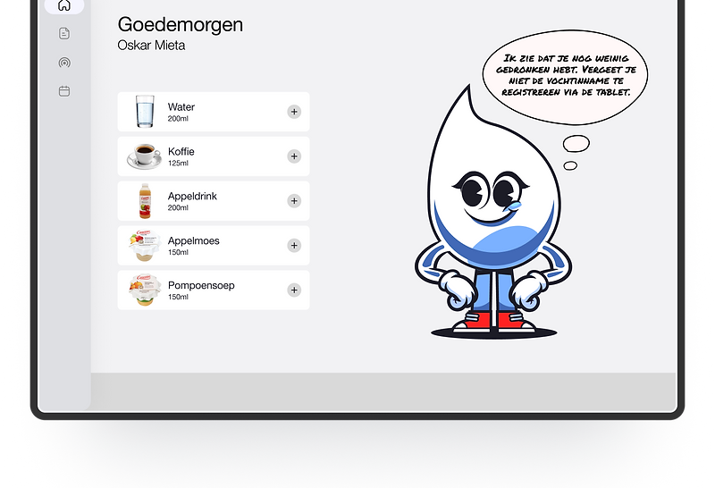

Erasmus MC
A personification/mascot that helps patients manage their fluid balance.
Design challenge
"How can we simplify and potentially automate the process of fluid balance registration for patients and nurses in the Cardiology department?"
Scenario
Patients in the Cardiology department of Erasmus MC are asked to track their fluid intake to monitor their heart condition. However, they face issues such as losing the registration paper, not having a pen available, or forgetting to record their intake. These challenges result in inaccuracies in monitoring their health condition.
Research
- Patients — to understand their challenges, preferences, and motivations.
- Specialists — to identify pain points in the current process and their expectations for an improved system.
- Field observations.
Desired situation
With the personification of Druppie, we can explain to patients why tracking their fluid balance is important while also motivating them to take ownership of the process. This, in turn, fosters trust in the monitoring system.
By using education, positive affirmations, and nudges, we can promote healthy behavioral changes in patients.
Final design
Progress overview — a visual graph showing daily intake with motivational messages from Druppie.